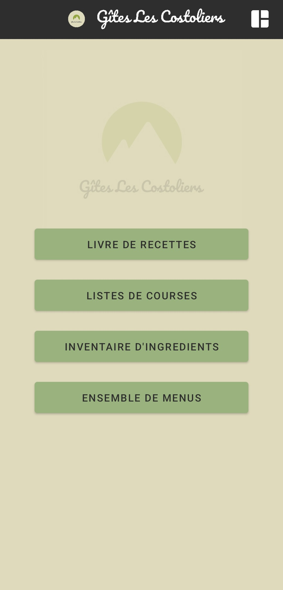
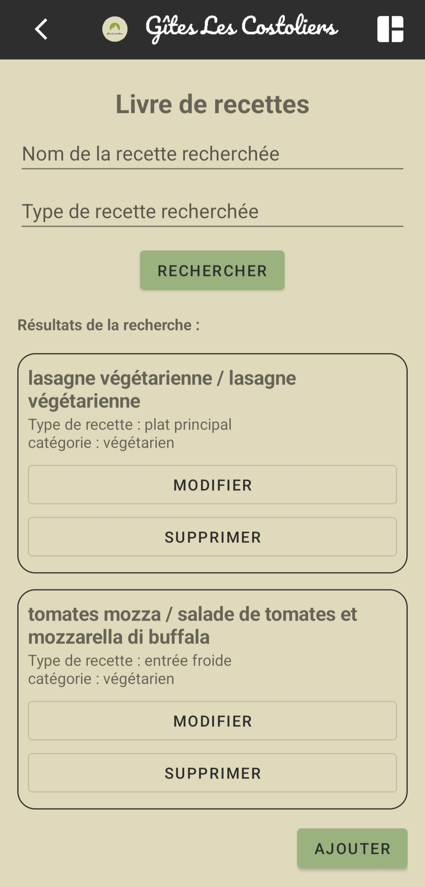

Application de gestion pour restaurant
Android – Gestion des menus, recettes, marges


Contexte
En cours de développements pour le restaurant de mes parents, cette application permet de gérer l’ensemble de leurs recettes, d’organiser les menus, et de calculer automatiquement les prix en fonction du coût des ingrédients et d'une marge définie.
Fonctionnalités
- Ajout et édition des recettes
- Calcul automatique des prix
- Organisation des menus
- Phase de test en cours sur Android